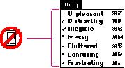

|
Avoid Nonstandard Marks in MenusDon't use any nonstandard marks or arbitrary graphic symbols in menus. They only add visual clutter to the menu and people won't necessarily understand the significance of the nonstandard marks--for example, they won't know what a circle, addition sign, or tilde in a menu means. Figure 4-26 shows some marking techniques to avoid.Figure 4-26 Don't use arbitrary symbols in menus  |